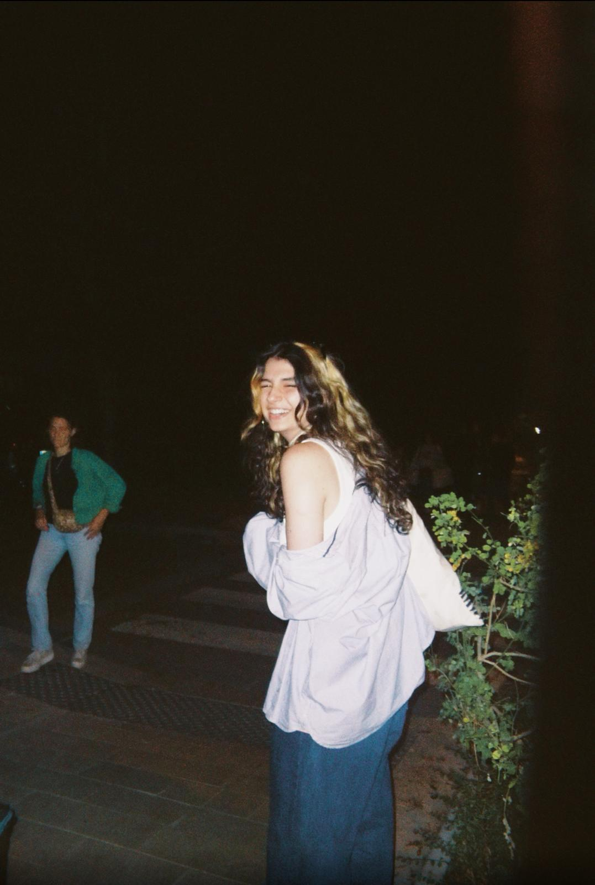

Diplômée d’une licence d’informatique à Sorbonne Université, j’ai entamé le master Interaction, Graphics & Design à l’Institut Polytechnique de Paris cette année. En parallèle de mes études, je suis très investie depuis plusieurs années dans une association, où je participe à de nombreux projets cinématographiques et à des actions visant à partager la culture auprès des jeunes.
Sur mon temps libre, je fais du dessin, de la photo, du montage et de la musique, et j’adore apprendre de nouvelles choses. Je passe également beaucoup de temps à filmer et photographier mon entourage avec tous types de caméras.
Mon rêve depuis que j’ai commencé l’informatique est de croiser l’art et la technologie dans ce que je ferai de ma vie. Je viens de découvrir l’informatique graphique, et en quelques mois j’ai déjà acquis de solides bases. Je suis plus motivée que jamais à progresser davantage.
J’ai également une streak de 1482 jours sur Duolingo.
After graduating with a bachelor's degree in computer science from Sorbonne University, I began a master's degree in Interaction, Graphics & Design at the Paris Institute of Technology this year.
Alongside my studies, I have been very involved in an association for several years, where I participate in numerous film projects and initiatives aimed at sharing culture with young people.
In my free time, I enjoy drawing, photography, editing, and music, and I love learning new things. I also spend a lot of time filming and photographing those around me with all kinds of cameras.
Ever since I started studying computer science, my dream has been to combine art and technology in my future career. I have just discovered computer graphics, and in just a few months I have already acquired a solid foundation. I am more motivated than ever to progress further.
I also have a 1,482-day streak on Duolingo.

Contact :
- Email : ninaluc92@gmail.com
- GitHub : github.com/egonyn
- LinkedIn : Nina Luc
- Instagram : @_nina.lc_